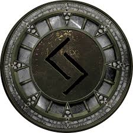
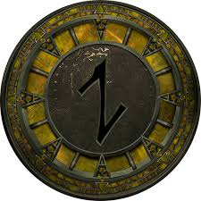
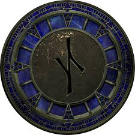
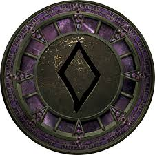
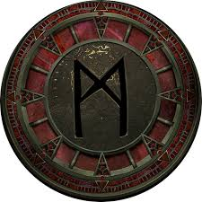
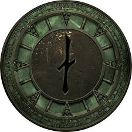
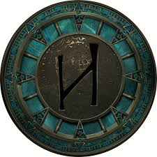

Asgard
Asgard es el hogar de los dioses Aesir, como Odín, Thor y Freyja. Es un lugar de esplendor y grandeza, conectado a Midgard por el puente arcoíris Bifröst. Aquí se encuentra Valhalla, donde los guerreros valientes aguardan el Ragnarök.

Midgard
Midgard es el reino de los humanos, situado en el centro de Yggdrasil. Está protegido por los dioses, quienes lo rodearon con un océano infranqueable habitado por Jörmungandr, la Serpiente de Midgard.
Alfheim
Alfheim es el reino de los elfos de la luz, seres hermosos y etéreos que irradian magia. Gobernado por Freyr, este reino es un lugar de luz y armonía, representando la belleza natural del cosmos.

Jotunheim
Jotunheim es el hogar de los gigantes, enemigos de los dioses. Es un reino salvaje y desolado, lleno de montañas y peligros, habitado por criaturas colosales y seres mágicos.
Svartalfheim
Svartalfheim es el reino de los elfos oscuros y enanos. Es un lugar subterráneo, lleno de cuevas y forjas donde los enanos fabrican objetos mágicos como el martillo Mjölnir de Thor.
Vanaheim
Vanaheim es el hogar de los Vanir, dioses asociados con la naturaleza, la fertilidad y la magia. Este reino es un lugar de paz y abundancia, en contraste con el belicoso Asgard.
Muspelheim
Muspelheim es el reino del fuego, habitado por los gigantes de fuego liderados por Surt. Este lugar es ardiente y hostil, y se dice que será el origen de la destrucción durante el Ragnarök.
Niflheim
Niflheim es el reino del hielo y la niebla, lleno de frío y oscuridad. Es el lugar donde comenzó la creación, con el choque de fuego y hielo, y donde reside el pozo de Hvergelmir, la fuente de todos los ríos.
Helheim
Helheim es el reino de los muertos, gobernado por Hel, hija de Loki. Aquí residen las almas de aquellos que no murieron en batalla. Es un lugar oscuro y sombrío, donde reina la tranquilidad eterna.
